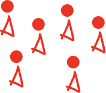
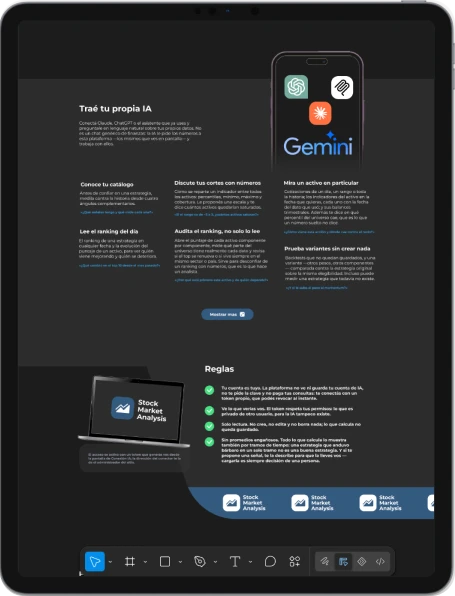
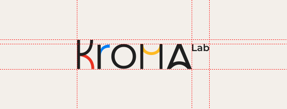
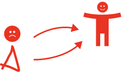
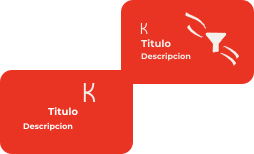
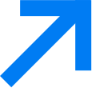
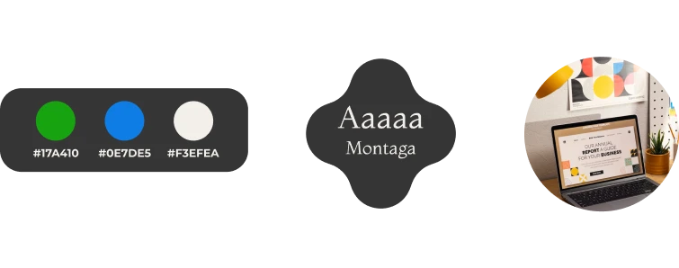
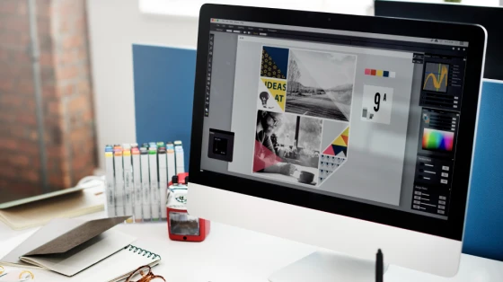

Se parece demasiado
a otras.
Tu presencia digital utiliza recursos que podrían pertenecer a cualquier marca.
Diseño web para marcas que quieren verse diferentes
Creamos experiencias digitales que hacen que una marca se sienta diferente desde el primer segundo.
Una nueva experiencia digital para una marca que quería dejar atrás lo convencional.

Tener una gran marca no siempre significa que las personas perciban todo su valor.
Podés tener una propuesta increíble, pero si tu presencia digital se siente genérica, tu marca pierde la oportunidad de destacar.


Tu presencia digital utiliza recursos que podrían pertenecer a cualquier marca.

Lo que ofrecés es diferencial, pero esa percepción no llega a tus clientes.

El diseño puede ser atractivo, pero sin una estrategia detrás no construye una experiencia memorable.
Tu marca tiene una identidad.
Hagamos que se sienta.

Nuestro laboratorio combina estrategia y tecnología para construir la solución adecuada para cada proyecto.

Diseñamos y desarrollamos aplicaciones web completas, pensadas tanto en cómo se ven como en cómo funcionan.

Diseñamos y desarrollamos páginas web desde cero, combinando una dirección visual propia con UX/UI y desarrollo frontend.